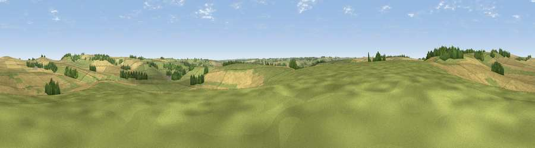

Viewpoint near Upper Lambourn
#36007 in England · top 72% of its area beats it · near Upper LambournWhere it is
The exact computed spot (SU 31225 83525). Click the marker for map links.
The view, rendered

A 360° render of this exact spot computed from the terrain model, tree cover and land cover — summer colours, afternoon light, calibrated against photographs of famous viewpoints. Real trees, hedges and buildings will differ in detail.
The panorama
Grey silhouette: terrain skyline in each direction (720 bearings, Earth curvature and refraction included). Dashed green: skyline with trees (+15 m) and buildings (+8 m) as obstacles. Blue strip: how far the ground is visible on each bearing.
Where the view opens
Wedge length = distance to the farthest visible ground on that bearing (vegetation-aware). Rings at 10, 25 and 50 km.
What fills the view
52% cropland · 43% grassland · 5% woodland
Angular shares of the visible panorama (visual magnitude), not map area. Landscape diversity 0.37 (0–1 Shannon).
Key numbers
More beautiful places nearby
The staircase of upgrades: each row has a higher view potential than everything closer. Driving times are estimates from straight-line distance, calibrated against real road routing — check an actual route before setting out.
| Place | Direction | Drive | Score |
|---|---|---|---|
| Tower Hill | W · 3 km | ~7 min | 54.6 |
| Viewpoint near Ashbury | WSW · 3 km | ~7 min | 57.0 |
| Viewpoint near Kingston Lisle | N · 3 km | ~7 min | 68.5 |
| Viewpoint near Woolstone | NNW · 3 km | ~8 min | 76.7 |
| Martinsell viewpoint | SW · 24 km | ~39 min | 77.3 |
| Viewpoint near Leckhampton | NW · 50 km | ~71 min | 77.8 |
| Viewpoint near Great Witcombe | NW · 52 km | ~74 min | 80.5 |
| Nottingham Hill | NW · 56 km | ~78 min | 80.9 |
51.54976, -1.55107 · source: screening · position refined by local search. Computed location — check access rights before visiting.